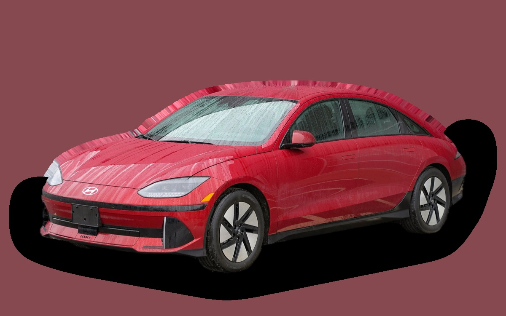

Vad kostar en Hyundai Ioniq 6 per månad?
En Hyundai Ioniq 6 från 2023 kostar cirka 3 538 kr i månaden, allt inräknat.
3 538 krper månad, årsmodell 2023
322 000 krpris, årsmodell 2023
519 900 krnypris från
Bprisvärdhetsbetyg (2023)


Månadskostnad per årsmodell
| Årsmodell | Version i beräkningen | Pris | Per månad | Betyg |
|---|---|---|---|---|
| 2026 | Standard Range 53 kWh, Essential | 519 900 kr | 5 718 kr | D |
| 2023 | Standard Range 53 kWh, Essential | 322 000 kr | 3 538 kr | B |
Räknat på 5 års ägande och 1 250 mil per år, med bränslepriser från 2026-10-22. Månadskostnaden innehåller värdeminskning, drivmedel, service och reparationer, försäkring och fordonsskatt.
Så fördelas kostnaden för en 2023:a
- Värdeminskning: 2 277 kr/mån
- Drivmedel: 361 kr/mån
- Service och reparationer: 289 kr/mån
- Försäkring: 581 kr/mån
- Fordonsskatt: 30 kr/mån
Begagnatpriser i annonser
| Årsmodell | Medianpris | Annonser | Typiskt miltal |
|---|---|---|---|
| 2024 | 394 300 kr | 8 | 3 200 mil |
| 2023 | 389 000 kr | 6 | 4 700 mil |
Medianpriset i svenska annonser per årsmodell i oktober 2026 (källa: AutoUncle, Finland). Annonspriser är utgångspriser, och slutpriset kan bli lägre.
Motorer och versioner
| Motor | Drivmedel | Effekt | 0–100 km/h | Förbrukning (WLTP) | Räckvidd | Årsmodeller | Pristillägg |
|---|---|---|---|---|---|---|---|
| Standard Range 53 kWh | El | 151 hk | 8,8 s | 14 kWh/100 km | 429 km | från 2023 | – |
| Long Range 77 kWh | El | 229 hk | 7,4 s | 14,3 kWh/100 km | 614 km | från 2023 | +35 100 kr |
| Long Range AWD | El | 325 hk | 5,1 s | 16 kWh/100 km | 519 km | från 2023 | +70 000 kr |
- Utrustning: Essential, Advanced (+39 900 kr)
Fakta
- Kaross
- Sedan
- Årsmodeller
- sedan 2023
- Nypris från
- 519 900 kr
- Bagage
- 401 liter
- Euro NCAP
- 5 av 5 stjärnor
- Nybilsgaranti
- 5 år
- Driftsäkerhet
- 3 av 5
- Helförsäkring, uppskattning
- 9 500 kr/år
- Service, uppskattning
- 2 500 kr/år
Vanliga fel att ha koll på
- Laddenhet (ICCU), reparation cirka 30 000 kr
Felen gäller vissa motorer och årsmodeller. I kalkylatorn räknas risken för just den version du väljer.
Fördelar och nackdelar
Fördel
Lång räckvidd och mycket snabb laddning.
Nackdel
Litet bagage och snabb värdeminskning.
Liknande bilar
 Saab 9-3 Sport Sedan3 565 kr/mån som 2008:a
Saab 9-3 Sport Sedan3 565 kr/mån som 2008:a Volvo S60 II3 664 kr/mån som 2015:a
Volvo S60 II3 664 kr/mån som 2015:a Tesla Model 33 306 kr/mån som 2023:a
Tesla Model 33 306 kr/mån som 2023:a Volvo S803 773 kr/mån som 2013:a
Volvo S803 773 kr/mån som 2013:a Volkswagen Arteon3 786 kr/mån som 2021:a
Volkswagen Arteon3 786 kr/mån som 2021:a Saab 9-5 Sedan3 805 kr/mån som 2006:a
Saab 9-5 Sedan3 805 kr/mån som 2006:a
Uppdaterad 2026-10-27 · annonsdata okt 2026